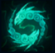
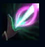
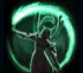
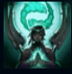

Karma
| Karma The Enlightened One | |
|---|---|
| Release date | 01.02.2011 |
| Class | Burst, Enchanter |
| Positions | Support, Top |
| Resource | Mana |
| Range type | Ranged |
| Adaptive type | Magic |
| Base statistics | |||
| Health | 534 – 2149 | Mana | 374 – 1224 |
| Health regen. | 5.5 – 14.85 |
Mana regen. | 11.5 – 20 |
| Armor | 26 – 90.6 | Attack damage | 54 – 110.1 |
| Magic resist. | 30 – 38.5 | Crit. damage | 175% |
| Move. speed | 335 | Attack range | 525 |
Niciun muritor nu reprezintă tradițiile spirituale ale Ioniei mai bine decât Karma, o ființă binecuvântată cu o putere pe care puțini o pot înțelege. Ea este reîncarnarea unui suflet străvechi care s-a reîntrupat de nenumărate ori, purtând mereu cu ea amintirile din viețile anterioare. A făcut tot ce a putut pentru a-și îndruma poporul în timpuri de restriște, deși știe că pacea și armonia pot fi obținute uneori doar cu un preț considerabil – atât pentru ea, cât și pentru Ionia ei iubită. |  |
ÎNFLĂCĂRARE Reduce timpul de reactivare al ''Mantrei'' de fiecare dată când Karma îi provoacă daune unui campion inamic cu una dintre abilitățile sau atacurile ei de bază. |
||
|---|---|---|---|---|
 |
FLACĂRĂ INTERIOARĂ Karma lansează o sferă de energie spirituală care explodează și provoacă daune atunci când lovește o unitate inamică. Bonus ''Mantră'': pe lângă explozie, ''Mantra'' crește puterea distructivă a ''Flăcării interioare'', creând un cataclism care provoacă daune după un scurt timp. |
|||
FOCALIZARE Karma creează o legătură între ea și un inamic-țintă, provocându-i daune și dezvăluindu-l. Dacă legătura nu este ruptă, inamicul va fi țintuit și va suferi din nou daune. Bonus ''Mantră'': Karma întărește legătura, vindecându-se și prelungind durata țintuirii. |
||||
|  |
INSPIRAȚIE Karma invocă un scut protector care absoarbe daunele primite și crește viteza de mișcare a aliatului protejat. Bonus ''Mantră'': energia pe care o degajă ținta augmentează scutul inițial și oferă ''Inspirație'' campionilor aliați din apropiere. |
|||
 |
FURTUNA DEȘERTULUI Azir invocă un zid format din soldați care înaintează, împingând în spate inamicii și provocându-le daune. |